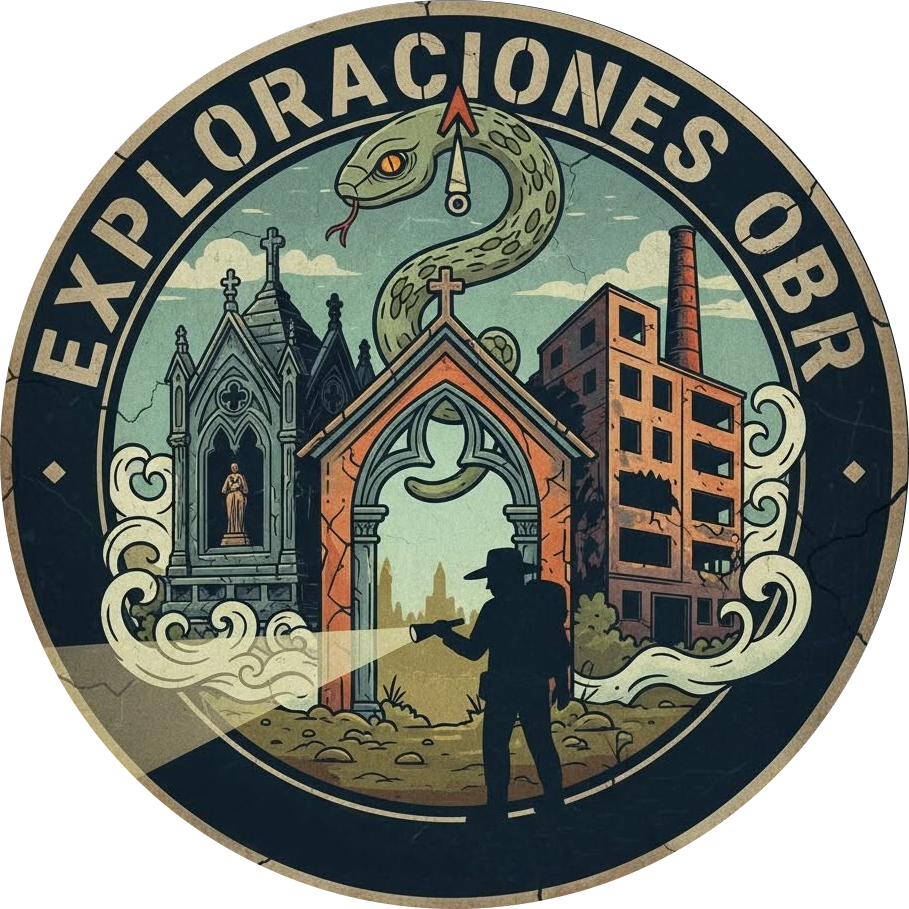

GIRAR DISPOSITIVO

EXPLORACIONES OBR
--/--/-- - --:--:--
🚀
⚠️
RED/TTS
📦 OFFLINE
INSTALAR APP
PREVIEW
AUDIO SCAN
INIT...
-- FPS
NOCT
NEG
URBEX
LIDAR
VISION
SLS
RESET
OBR CAM
v6.1.66 (Spirit vox)
CARGANDO...
INICIAR CÁMARA
🚫
ACCESO DENEGADO
↺ REINTENTAR
CONECTAR A ESTUDIO
ENLAZAR
CANCELAR
CONFIGURACIÓN SISTEMA
OCULTAR MENÚS
NO APARECEN AL TOCAR
RED ESTUDIO
DOCK ID / IP
IP → ID AUTO
IA ANALYZER
GEM
GRQ
VALIDAR KEY
ESTADO TTS ENGINE
Engine:
ELEVENLABS
Créditos:
9908 / 10000
Usados:
92
Fallback:
NO
ENLACE ESTUDIO
CONECTAR / DOCK
GUARDAR Y CERRAR